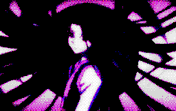
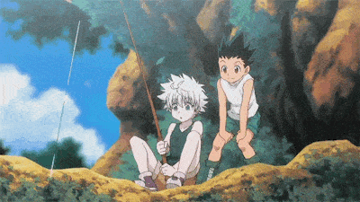
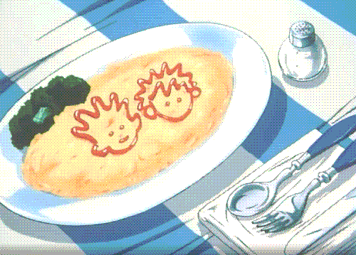
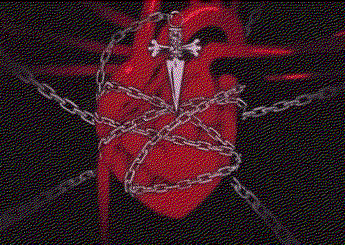
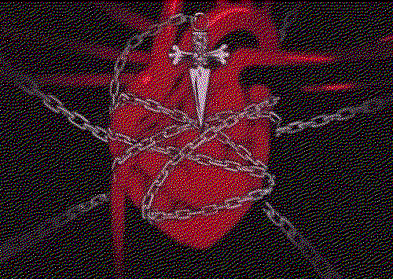

welcome to my hunter x hunter shrine
i simply do not know how to be normal about this show in real life nor do i know how to be normal about this on the internet. welcome to my favorite tv show of all time. let's BEGIN. (click here to go back)
short overview to get things out of the way...

Hunter X Hunter (or hxh) is a manga series written by Yoshihiro Togashi. he started writing the series in 1998 and the story is still ongoing! the manga was  adapted into an anime series in 1999 and then again in 2011. as i show u my favorite characters you'll see images from both versions, though i like the 1999 art style more... ☆⌒(ゝ。∂)
adapted into an anime series in 1999 and then again in 2011. as i show u my favorite characters you'll see images from both versions, though i like the 1999 art style more... ☆⌒(ゝ。∂)
the general plot of the show follows this cute little lad, gon freeccs, who's goal is to find his father (a really...... fascinating fella. more on him later) and become a Hunter!!!! his dad left him as a child to go adventure and stuff and gon follows in his footsteps. on the way he meets new friends!!!
this is really boring because i felt like i needed to have a Home page for the sake of a home page. the real juicy stuff is NEXT... click on the tabs up there 2 read my juicy brain thoughts and stuff...
this is a list of every single hxh character song ranked in order of greatness ☆ (this used to be on a cute background where the songs were on thsi little mp3 player i drew but it keeps getting wonky when i try it insert it here so i gave up on it... sorry but u just get a plain old list for now...)
here goes nothin!

- cycless wind (phinks): best song to ever
- オチロ底マデ (tonpa): too good... like. TOO good....
- OH MY!!! (pitou): pop rock perfection
- 1/13 (chrollo): emo soothes the soul
- 狂想レクイエム (hisoka): it's so him & incredibly catchy
- tell me (killua): more emo for the soul
illumi zoldyck
also spelled irumi or yellmi Zaoldyck

yellmi is my favorite character ever. while i actually did not pay attention to him during my first watch (there have been many... many watches since then) (i think the count is at around 7 watches? i don't actually remember) but the second time i watched this show i was immediately charmed by illumi's strange and off-putting personality.  first thing i'd like to note is his alter-ego, Gittarackur. any guy who decides to present himself to the world looking like THAT is bound to recieve my eternal love. this look is actually pretty painful to achieve, which goes to show how far our guy is willing to go for the bit. also? so incredibly gender. i'll do a section on that later maybe.
first thing i'd like to note is his alter-ego, Gittarackur. any guy who decides to present himself to the world looking like THAT is bound to recieve my eternal love. this look is actually pretty painful to achieve, which goes to show how far our guy is willing to go for the bit. also? so incredibly gender. i'll do a section on that later maybe.
{kind=link}
the way togashi wrote his character is absolutely brilliant, one of my favorite things about him is how chatty and talkative he is in his cheerful and light voice which contrasts so starkly against his huge alien-esque soulless eyes and stoic expression. it's such a fascinating combo.  while growing up on a huge manor in kukuro mountain, illumi is a creature through and through. social skills, materialism, and all that jazz mean nothing to him. Why Mattress When Dirt Soft Too? he's a simple guy with one thing on his mind: his family. i think illumi is very unhealthy about his family and how he loves and protects them and for this i love him, and the main way this is shown is through his relationship with killua.
while growing up on a huge manor in kukuro mountain, illumi is a creature through and through. social skills, materialism, and all that jazz mean nothing to him. Why Mattress When Dirt Soft Too? he's a simple guy with one thing on his mind: his family. i think illumi is very unhealthy about his family and how he loves and protects them and for this i love him, and the main way this is shown is through his relationship with killua.

being the Eldest, yellmi raised killua with his bare hands for the sake of his family. illumi's main goal is to make sure killua suceeds in fulfilling his role in the family, not taking the time to consider anything else killua might want because in illumi's pov, nothing matters more than family. i'm sure this sentiment is something a lot of us with Familly Issues grapple with often. he's overbearing and controlling and is genuinely shocked to find out killua might like someone else (gon) more than his own brother?? which i found so amusing and so telling of How His Mind Works. ♡ (>ᴗ•)
i think a major reason why illumi is so hung up on this idea that he cant have friends (does he really know what friendship truly is? i dont think so considering his actual friendship with hisoka he doesn't seem to recognize as such) is because of his main priority towards his family. perhaps its because he was denied the Hier title despite being the oldest child so he serves his family to make up for it? but i also think this may not be true since the zoldycks subvert so many other Standards and Norms who's to say they don't always deem the eldest the Heir.
anyways, another point i want to make before i move on is the whole nen needle manipulation he put in killua that made him run away whenever he faced an overwhelming opponent. while obviously understanding the fact that this needle has tortured baby killu for years and totally messed up his ideas about his own self worth and purpose in life, i also wanted to explore this dynamic as a way of yellmi allowing his brother some freedom (sort of in the same way silva "allows" him to adventure knowing well he will be manipulated back into the Family Business) while still protecting him from harm when illumi is not nearby to save him which is truly messed up but also... so in line with illumi's thinking? i mean in his perspective he actually came up with a genius automated babysitter. the needle scared killua enough to flee from anyone stronger than he is, both sharpening his assassin skillz or whatever but also pretty mych guarenteeing his safety??? illumi you are so big brained for this. life360 but better (but actually worse). i remember bringing this up to a friend for the first time because i didn't realize no one else read that situation this way and she validated my illumi thinking.
inappropriate emotional responses and codependency issues aside, i do want to emphasize yellmi's fun silly and goofy traits because they are Important. would you want someone judging your entire character based on how you act during your times of distress? i didn't think so! my all-time favorite illumi is from the hxh musical. an incredbily silly and unserious lad. the most memorable example is this iconic dancing scene because he totally did Not need to do that. but he did. he decided of his own free will to do a little dancy dance before freeing his family from hisoka's strings!!!!!! a free spirit indeed. the musical is really fun if you want some good Honest to god illumi content. highly reccomend it.
gon & killua !
ヽ( ⌒ω⌒)人(=^‥^= )ﾉ
introducing... the main characters! our little babies ☆

killua and gon are one of my favorite tv friendships ever portrayed in media. inseperable since the day they met, these two stole my heart! nobody is immune to gon's charm, not even killua. i love how hopeful gon is despite battling demons no 14 year old boy should battle, and while some might call him naive, i don't see it that way. it might be easy to deem gon one dimensional but i don't think being optimistic and caring are bad traits to have, especially when you're besties with a little guy as tortured and conflicted as killua. to me, they seem to balance each other out perfectly.
their relationship is definetly most defined by killua's perspective, as we see a lot of this in togashi's writing. to killua, gon is friendship (friendship being the one thing his family pressures him to be rid of). he is the light that contrasts the darkness he has been told he embodies throughout his entire life. i think this binary (?idk what word i'm trying to use here) between gon and his family is what makes killua hold onto their friendship so dearly. they love each other so much! they mean so much to each other! they are my sweet little adorable babies!
they love each other so much! they mean so much to each other! they are my sweet little adorable babies!
my favorite part about their relationship is actually the complications that arise in the chimera ant arc. this arc really cemented my thoughts on their friendship and love in a lot of ways (the rom-com structured date with palm episode says so much about the meaning of friendship, how much killu really loves gon, and also just how sweet gon can be to people who don't really know what love is). i think its soo important to explore their complicated friendship!! and how it was actually so Good for them to part ways after the election arc. (i also want to make it Known that i usually hate it when found families split at the end of an arc but i just feel like it works here. idk i love it in this case)
now i'm no psychiatrist, but i can identify codependency when i see it ♡ which is so real. have you truly Lived Life without at  least ONE codependent friendship? the answer is no. i think after so much time spent together and all the adventures and trials and tribulations and epic highs and lows of high school football they've faced together, going their own ways (not permanently!) was truly the best thing for them. with killua now reuniting with his little sister and being the only one who can protect her (which is actually another huge stressor on killua my baby let him rest. but i digress)
least ONE codependent friendship? the answer is no. i think after so much time spent together and all the adventures and trials and tribulations and epic highs and lows of high school football they've faced together, going their own ways (not permanently!) was truly the best thing for them. with killua now reuniting with his little sister and being the only one who can protect her (which is actually another huge stressor on killua my baby let him rest. but i digress)  and gon going off to meet his father, it feels like they've reached a point where they have learned as much as they could from each other and are more equipped now to be able to grow independently. since the series isn't over yet i still have hope they'll meet again in the future because i don't think their friendship could ever die no matter how long they're apart. i think its very Good for them to go on their own jounreys and explore who they are outside of each other. killugon is such a beautiful representation of what friendship means and what it looks like and how it can develop. they are wholesome! they are complex! they are light! they are love!
and gon going off to meet his father, it feels like they've reached a point where they have learned as much as they could from each other and are more equipped now to be able to grow independently. since the series isn't over yet i still have hope they'll meet again in the future because i don't think their friendship could ever die no matter how long they're apart. i think its very Good for them to go on their own jounreys and explore who they are outside of each other. killugon is such a beautiful representation of what friendship means and what it looks like and how it can develop. they are wholesome! they are complex! they are light! they are love!
Curapikt
also spelled Kurapica or Kurapika

ah, let us say hello to my second favorite aries ever (first favorite aries would be me).  kurapika, the last survivng member (that we know of) of the massacred kurta clan. kurapika makes it on the list of my favorite characters for his tragic and mysterious background (which i'll talk about in a bit) but also his iconic character design and growth throughout the series.  first, let's talk character design. his is one of my favorites of all time. there's a reason kurapika fanart always looks like renaissance art. his traditional kurta outfit is his default outfit, which i love because it shows how closely he holds dear his culture and family. i appreciate the mixture of different cultures that influence the style of his traditional wear. this makes total sense, as twitter user kleptoaranea mentions, since the Kurta migrated so much, providing so many opportunities for cultural
kurapika, the last survivng member (that we know of) of the massacred kurta clan. kurapika makes it on the list of my favorite characters for his tragic and mysterious background (which i'll talk about in a bit) but also his iconic character design and growth throughout the series.  first, let's talk character design. his is one of my favorites of all time. there's a reason kurapika fanart always looks like renaissance art. his traditional kurta outfit is his default outfit, which i love because it shows how closely he holds dear his culture and family. i appreciate the mixture of different cultures that influence the style of his traditional wear. this makes total sense, as twitter user kleptoaranea mentions, since the Kurta migrated so much, providing so many opportunities for cultural  diffusion! kurapika is the blueprint for every rage-consumed chain-loving emo-adjacent angsty-teen out there. i'm not sure what exactly it is but he just embodies this look so well. it really is truly Him, you know. the major part of his character desgin i want to talk about is the disguise he wears in yorknew city!!!! this was one of my favorite kurapika moments, not only for his super Sleek and Stylish outfit, but for this. "i never said i was [a woman]." gave me so many gender thoughts. he really said misgendering me is a YOU problem and i love him for it. his attitude about gender and expression stood out to me in this moment ♡( ◡‿◡ )
diffusion! kurapika is the blueprint for every rage-consumed chain-loving emo-adjacent angsty-teen out there. i'm not sure what exactly it is but he just embodies this look so well. it really is truly Him, you know. the major part of his character desgin i want to talk about is the disguise he wears in yorknew city!!!! this was one of my favorite kurapika moments, not only for his super Sleek and Stylish outfit, but for this. "i never said i was [a woman]." gave me so many gender thoughts. he really said misgendering me is a YOU problem and i love him for it. his attitude about gender and expression stood out to me in this moment ♡( ◡‿◡ )
obviously since the story is unfinished this is all just speculation and theory i've thunk and talked about with twitter friends. there's been tons of foreshadowing and buildup implying the kurta massacre very much could have been a revenge killing ordered by meteor city. meaning, this was not a massacre done on chrollo's whim, but an order he and the phantom troupe were tasked to fulfull. i think this detail completely changes the way we're supposed to think about the kurta clan, the phantom troupe, chrollo himself, and meteor city as an instituion.
 meteor city and the kurta massacre are directly connected. in chapter 102, some guy describes a revenge killing enacted by meteor city after one of their own people was framed and killed for a crime he didn't commit. at the scene of the crime, meteor city left a note, "we'll accept anything you leave here... but don't ever take anything away from us". which is the
meteor city and the kurta massacre are directly connected. in chapter 102, some guy describes a revenge killing enacted by meteor city after one of their own people was framed and killed for a crime he didn't commit. at the scene of the crime, meteor city left a note, "we'll accept anything you leave here... but don't ever take anything away from us". which is the  same exact note left at the kurta massacre. since the phantom troupe never leave this note when they do their own heists and killings, this would mean that the kurta massacre was ordered by meteor city elders to avenge someone or some people (but who? what did the kurta do to warrant a mass killing of almost their entire klan?) why would they leave a note if they were intending to wipe off every single kurta from the planet? there's something huge missing from this story that has yet to be revealed. i hope to one day see how this all plays out..
same exact note left at the kurta massacre. since the phantom troupe never leave this note when they do their own heists and killings, this would mean that the kurta massacre was ordered by meteor city elders to avenge someone or some people (but who? what did the kurta do to warrant a mass killing of almost their entire klan?) why would they leave a note if they were intending to wipe off every single kurta from the planet? there's something huge missing from this story that has yet to be revealed. i hope to one day see how this all plays out..
quwrof wrlccywrlfh
also known as chrollo lucilfer.... or kuroro (๑˃ᴗ˂)ﻭ
chrollo is definetly one of my favorite characters to analyze and think about. there's just so much to work with!! let's talk about his sense of self. He says he doesn't like to talk about his motives much, and Gon’s question (about why he can kill people who have nothing to do with him) stumps  him because he does not know the answer. He does not know why he does what he does, only that he must do it. it is clear from this panel that he wants to understand himself, he says he is searching for the key. but what could it be? after all, nothing about him is truly him. His abilities are stolen from others and kept in a book he borrows from. His goals and missions are all tied to the Phantom Troupe. he really put his entire being into the work of the phantom troupe and their goals. instead of thinking of himself as a leader, he sees himself as a piece of the puzzle, playing his part towards a bigger picture he is working towards.
him because he does not know the answer. He does not know why he does what he does, only that he must do it. it is clear from this panel that he wants to understand himself, he says he is searching for the key. but what could it be? after all, nothing about him is truly him. His abilities are stolen from others and kept in a book he borrows from. His goals and missions are all tied to the Phantom Troupe. he really put his entire being into the work of the phantom troupe and their goals. instead of thinking of himself as a leader, he sees himself as a piece of the puzzle, playing his part towards a bigger picture he is working towards.  to him, the Phantom Troupe as an extension of his own identity. He is the head of the spider, and the rest of the members are the legs. They are all connected because he sees himself as one with all of them. he seems to grapple with the opposing ideas of finding a sense of Self and existing within a Collective identity.
to him, the Phantom Troupe as an extension of his own identity. He is the head of the spider, and the rest of the members are the legs. They are all connected because he sees himself as one with all of them. he seems to grapple with the opposing ideas of finding a sense of Self and existing within a Collective identity.
Chrollo has no record of even existing, dead or alive. Born in Meteor City, the world’s dumpsite. Also, his contradictory relationship with existence itself might also be part of the reason why his main thing is stealing. He does not orchestrate heists out of material greed, but the need to exist and do something with tangible consequences. He wants interaction with all the worldly things. He does not actually care about the things he steals. He just steals for the sake of stealing (because he believes he was destined to do so?).
Meteor City. The fact that he grew up simultaneously existing and not existing might have some sort of an influence on his perception of human life and how much he values it. If people could throw away millions of their own to live on their trash, is human life really all that valuable? he sees little difference between people and puppets, which i think is very telling of how he sees himself as well. 
{kind=link}
“I don't consider Judas to be a traitor. They say Judas sold Jesus over for 30 silver coins. How much would this traitor sell us out for? Think about it. What would he gain by selling us to the Mafia? Money? Fame? Status? Would that really gratify any one of us.” He saw Judas as a puppet performing the “betrayal” that was supposed to happen, Judas had no say in the matter. This also explains his strangely calm reaction to Hisoka refusing to talk about his relationship with kurapika; if it was destined to happen, he can’t be mad at Hisoka for doing what he was meant to do. He sees people, as well as (maybe even especially) himself, as puppets. Puppets with roles to play in the prewritten script that is their destiny.
{kind=link}
Chrollo was elected leader by his troupe, and he accepted that role as fate, and he does his best to excel in that role. being elected instead of volunteering to be the leader of the Phantom Troupe is significant because it shows that he is not doing this for superficial reasons. it kind of reminds me of how a Prophet accepts his role as a leader after God has chosen him. Chrollo only gives the orders to raise hell upon Yorknew City after he reads the fortune to do so written by Neon. another destiny to be fulfilled. God  passes down messages to the prophet and the prophet spreads them to the people. God was writing the script of his destiny, then given to him by Neon, to act out (like a puppet would). But also, since he stole her power and she cannot predict his own future, he will never be able to see his own destiny again. But then again does that even matter? He does not have the need to know of his own future before it happens. Chrollo does not see himself as an individual outside of the role he plays in the Phantom Troupe because that is his destiny, there are no other options for him.
passes down messages to the prophet and the prophet spreads them to the people. God was writing the script of his destiny, then given to him by Neon, to act out (like a puppet would). But also, since he stole her power and she cannot predict his own future, he will never be able to see his own destiny again. But then again does that even matter? He does not have the need to know of his own future before it happens. Chrollo does not see himself as an individual outside of the role he plays in the Phantom Troupe because that is his destiny, there are no other options for him.
More about Neon. Chrollo was drawn to the obsolete nature of her fortunes. As someone who so deeply values predestination, he was completely distracted and  shifted his focus to her power in the middle of one of his heists. He made such a critical mistake by diverting from his plan to steal her power (because of that divinity means to him- I see him as an actor or a puppet performing what has been written- or even a Prophet maybe) that he delayed his search to find Kurapika and avenge Uvogin. He is usually so meticulous and thoughtful and careful with his planning which is how they got away with stealing and killing anything they wanted to, but this was what made him slip up. He really let his curiosity get the best of him here and I think that is very telling of what he truly wants and believes in.
shifted his focus to her power in the middle of one of his heists. He made such a critical mistake by diverting from his plan to steal her power (because of that divinity means to him- I see him as an actor or a puppet performing what has been written- or even a Prophet maybe) that he delayed his search to find Kurapika and avenge Uvogin. He is usually so meticulous and thoughtful and careful with his planning which is how they got away with stealing and killing anything they wanted to, but this was what made him slip up. He really let his curiosity get the best of him here and I think that is very telling of what he truly wants and believes in.
i also want to note that i developed a majority of these thoughts before the most recent hxh chapters (the biggest change-in-mind mostly lies within that last paragraph, but i still want to keep it up to look back on fondly..), so i'm still unsure of how hard i'm rocking with this whole predestination idea i had for him. but that's okay. the new chapters reveal sarasa's death was the defining moment that made chrollo decide to live the rest of his life as a villain to avenge her life and protect the rest of meteor city. this could very much be the greater purpose i mentioned he was after before. he no longer sees himself as a person worthy of an identiy, as he sees himself only as a force of destruction tasked with protecting his home and never allowing someone from meteor city to die like sarasa died. which is actually so heartbreaking, given how this all happened when he was a child ｡ﾟ･ (>﹏<) ･ﾟ｡ he just wants to protect his home, and is unforgiving towards powers that even think about hurting meteor city.
palm siberia
to be loved is to be changed. ☆⌒ヽ(*'､^*)

that tweet saying 'to be loved is to be changed' reminded me of palm and how she's changed throughout the series. her character arc is one of my favorites. people put too much emphasis on how much of a Freak she is but i think theres more to her than her obvious trauma. she is introduced as a complete Wreck who is obsessed with Knov, her captor, wanting him to come back to her as he is the only one who gives her any sort of specialized attention. to the point  where she's hostile towards killugon when they express hesitance about wanting to kill knuckles and shoot for her. i know people read this erratic behavior as poor personality traits but she is clearly being abused (seriously what is he doing with her blood). this is the reading i'm basing her character off of, at least. her insane actions start to make more sense through this perspective. before meeting killugon, she was unstable harmful to herself and others.
where she's hostile towards killugon when they express hesitance about wanting to kill knuckles and shoot for her. i know people read this erratic behavior as poor personality traits but she is clearly being abused (seriously what is he doing with her blood). this is the reading i'm basing her character off of, at least. her insane actions start to make more sense through this perspective. before meeting killugon, she was unstable harmful to herself and others.
and then she meets gon! and they hang out on their "date" and he is so kind to her (and probably the only person in her life who has ever shown her kindness, and i don't think that's an exaggeration). and then she meets gon! and they hang out on their "date" and is so kind to her (and probably the only person in her life who has ever shown her kindness, and i don't think that's an exaggeration). and that's  just the purest expression of love (in a platonic way of course, don't be weird) and this obviously changes her dramatically (as love often does). i think that 'date with palm' chapter and episode is really important for showing palm what love means and what it looks like for her. which ultimately leads to her coming to a point where she knows enough to show her love by stepping back and actually letting killua be there for gon because she now knows it's what he needs. it gives her a new perspective. this is huge for her character development, too. without gon's kindness she would not have changed the way she did.
just the purest expression of love (in a platonic way of course, don't be weird) and this obviously changes her dramatically (as love often does). i think that 'date with palm' chapter and episode is really important for showing palm what love means and what it looks like for her. which ultimately leads to her coming to a point where she knows enough to show her love by stepping back and actually letting killua be there for gon because she now knows it's what he needs. it gives her a new perspective. this is huge for her character development, too. without gon's kindness she would not have changed the way she did.
hence, to be loved is to be changed.